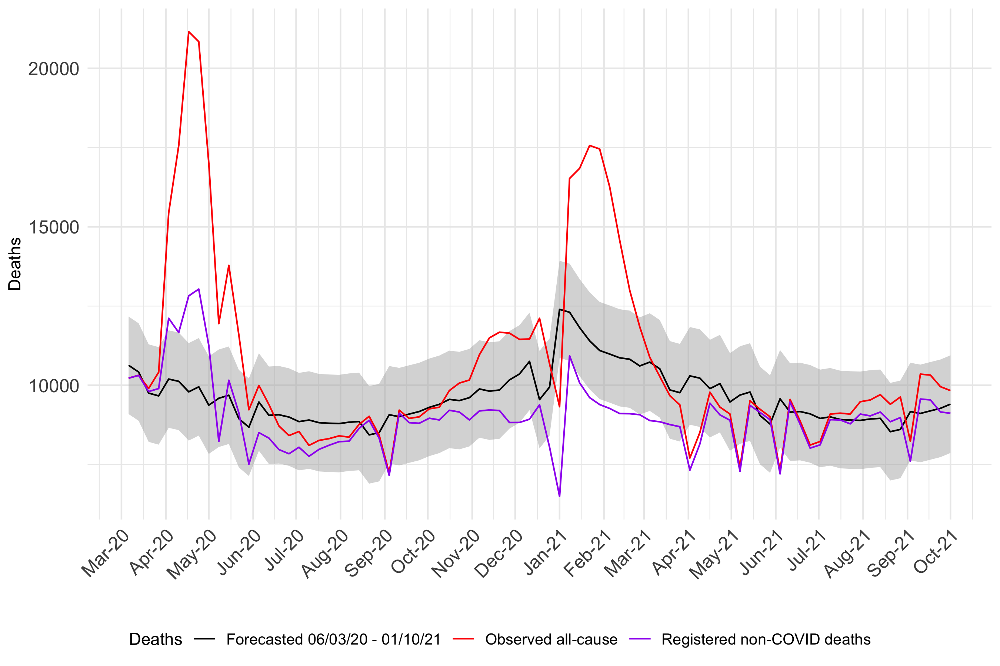
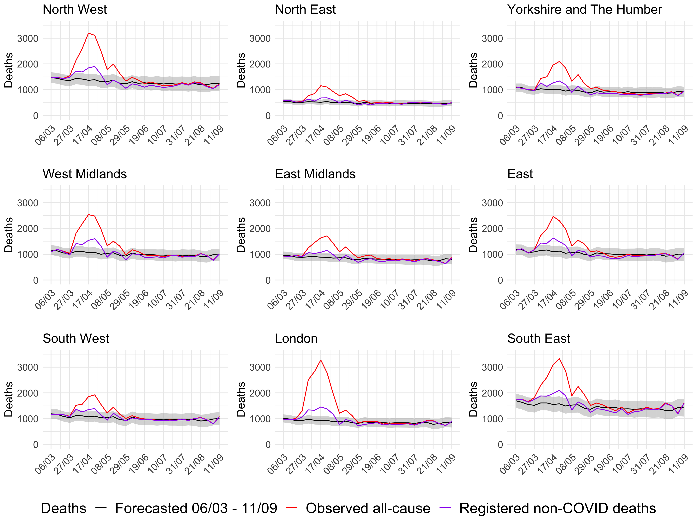
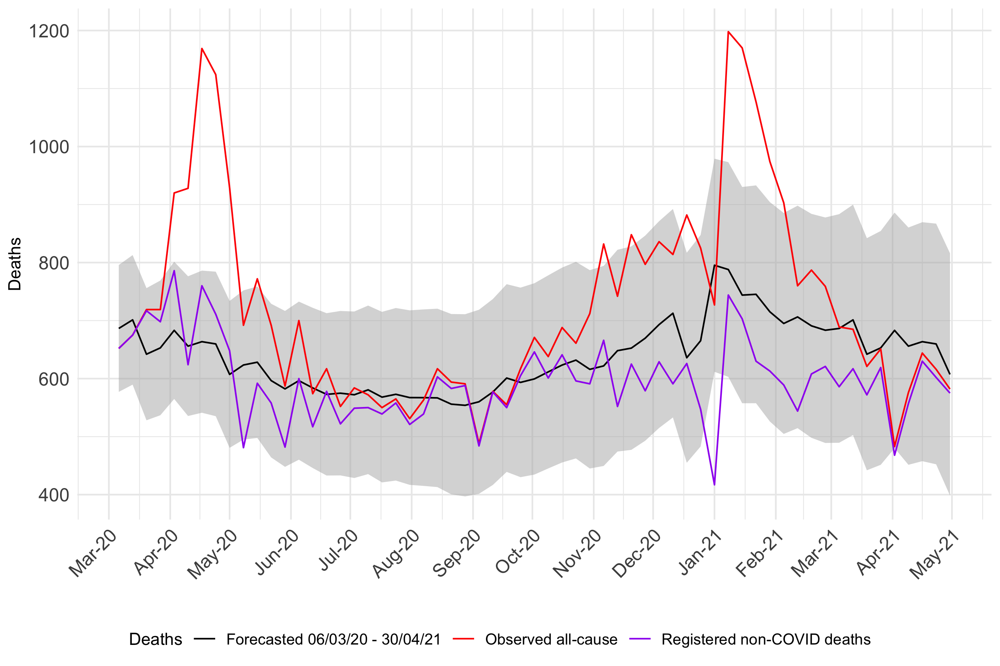
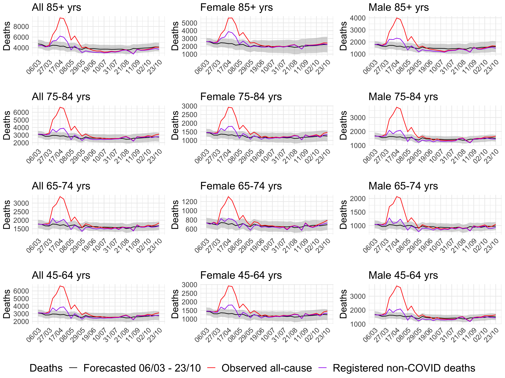
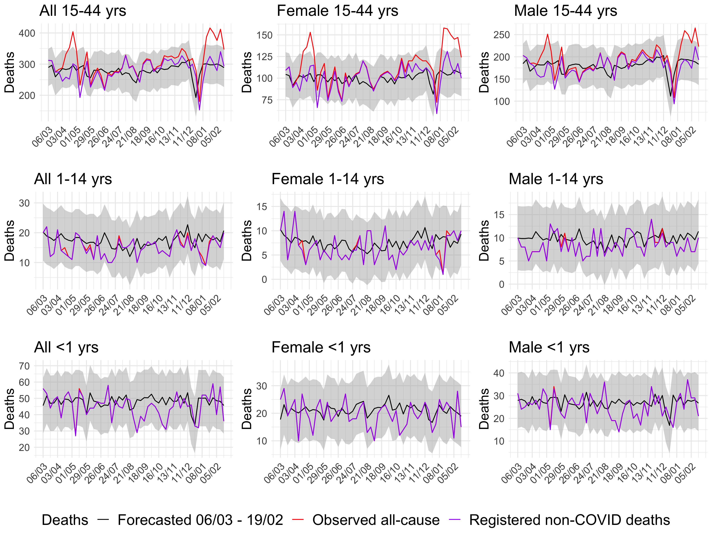

J-IDEA COVID-19 excess deaths tracker for England and Wales
J-IDEA COVID-19 excess deaths tracker for England and Wales
Weekly estimates of expected deaths and excess non-COVID-19 deaths during the pandemic in England and Wales
Correspondence: Katharina Hauck, Neil Ferguson
Introduction
This website provides weekly updates of deaths in England and Wales using publicly available data on the provisional number of deaths registered in the past week from the Office of National Statistics (see Data). We show the number of registered all-cause deaths, and the deaths registered as COVID-19 deaths as provided by the ONS for every week beginning in March 2020. We compare the all-cause deaths with the number of deaths we would have expected to see being registered in this week had there been no pandemic, based on numbers of deaths in corresponding weeks of previous years, and determine the number of excess deaths as the difference. We then compare the excess deaths with the recorded COVID-19 deaths, which gives an estimate of excess deaths that were not associated with COVID-19 according to official registers. These estimates of excess non-COVID-19 deaths inform whether the pandemic led to unexpected deaths that were higher (or lower) than what we would have expected in that week (Figure 1). It is possible that all or almost all excess deaths comprise of registered COVID-19 deaths, in that situation there are no excess non-COVID-19 deaths (Figure 2). It is also possible that excess non-COVID-19 deaths are actually lower than expected deaths, once registered COVID-19 deaths are subtracted from excess deaths (Figure 3). We also present total cumulative deaths across all categories. This is the sum of registered all-cause deaths, COVID-19 deaths, expected deaths and excess non-COVID-19 deaths from the week ending 6 March 2020 to 16 October 2020.
It is not straightforward to estimate expected deaths, because the number of deaths in the absence of the pandemic is inherently unobservable. We forecast the expected number of deaths in each week from March 2020 onwards using time series methods and data on deaths going back to 2010. We consider the uncertainty around our estimates using prediction intervals. For further details, see the Methods section.
Possible interpretations of excess non-COVID-19 deaths
If excess non-COVID-19 deaths are higher than expected deaths: First, it is possible that deaths actually caused by COVID-19 are incorrectly attributed to other conditions. This could be due to lack of a diagnosis, nonspecific symptoms before death, multimorbidity making attribution of death difficult, lack of knowledge by the reporting medical staff, or stigma-related concerns of family members. Non-COVID-19 related deaths could be genuinely higher during the pandemic. First, the pandemic has caused disruption to healthcare provision. Hospitals have cancelled elective surgeries in some weeks, possibly resulting in increased mortality in those patients. Second, even critically ill patients may be reluctant to access care, for fear of hospital-acquired infections. Both inability and reluctance to access care may have led to patients’ death, when they would have survived in the absence of the pandemic.
If excess non-COVID-19 deaths are lower than expected deaths: This finding could be due to irregularities in reporting. Second, the reduction in mobility and travel associated with control measures, particularly stay-at-home orders, may result in a reduction in accidents and associated deaths. Third, it is also possible that COVID-19 disease may cause mortality displacement, a short-term forward shift in mortality whereby a certain proportion of deaths due to COVID-19 occurred in patients that would have died of other conditions in the following weeks or months. This implies that over time, COVID-19 deaths that are higher than expected all-cause deaths are followed by lower than expected non-COVID-19 deaths in the following weeks and months, resulting in a deficit in excess non-COVID-19 deaths. In addition, hospitals have increased their capacity over time to treat non-COVID patients or patients changed their behaviour and started visiting hospitals again resulting in a reduction in deaths in line with expected levels.
Variations in deaths: The figures show steep increases and declines for COVID-19 deaths and unexplained deaths in some regions and for some ages over the weeks since March 2020. In some regions and weeks, excess non-COVID-19 deaths are even lower than expected deaths. These findings could have several explanations. First, case numbers vary over the pandemic, leading to variations in hospitalizations and deaths with a 2 to 3 weeks delay on average. Second, there may be irregularities in reporting. For example, in the first weeks of the pandemic, deaths due to COVID-19 may have been wrongly attributed to other conditions instead of COVID-19 but and in later weeks, non-COVID-19 deaths may have been wrongly attributed to COVID-19.
Findings
England: Deaths from week ending 06/03/2020 to week ending 16/10/2020

In the week ending 16 October 2020, there were 9833 registered all-cause deaths in England. These comprise of 622 deaths registered due to COVID-19 and 9211 deaths registered due to other conditions.
Over the weeks ending 6 March 2020 to 16 October 2020, there were 354935 cumulative registered all-cause deaths in England. These comprise of 50931 deaths due to COVID-19 and 304004 deaths due to other conditions.
English regions: Deaths from week ending 06/03/2020 to week ending 16/10/2020

Wales: Deaths from week ending 06/03/2020 to week ending 16/10/2020

In the week ending 16 October 2020, there were 688 registered all-cause deaths in Wales. These comprise of 47 deaths due to COVID-19 and 641 deaths due to other conditions. We would have expected 623 (95% PI 455 – 791) all-cause deaths for that week. This implies that total excess deaths were between -103 – 233, and excess non-COVID-19 deaths were not significantly different than the expected deaths.
Over the weeks ending 6 March 2020 to 16 October 2020, there were 22423 cumulative registered all-cause deaths in Wales. These comprise of 2688 deaths due to COVID-19 and 19735 deaths due to other conditions.
England and Wales, older age groups: Deaths from week ending 06/03/2020 to week ending 16/10/2020

England and Wales, younger age groups: Deaths from week ending 06/03/2020 to week ending 16/10/2020

England: Weekly deaths since 06/03/2020
| Week ended | Reported all-cause deaths | Expected (%) | Expected 95% prediction interval (%) | COVID-19 (%) | Excess non-COVID-19 | Excess non-COVID-19 95% prediction interval (%) |
|---|---|---|---|---|---|---|
| 2020-03-06 | 10,225 | 10,631 (104.0%) | 9,092 - 12,169 (88.9% - 119%) | 0 (0%) | -406 (-4%) | -1,944 - 1,133 (-19% - 11.1%) |
| 2020-03-13 | 10,317 | 10,419 (101.0%) | 8,880 - 11,957 (86.1% - 115.9%) | 5 (0%) | -107 (-1%) | -1,645 - 1,432 (-15.9% - 13.9%) |
| 2020-03-20 | 9,903 | 9,754 (98.5%) | 8,215 - 11,292 (83% - 114%) | 100 (1%) | 49 (0.5%) | -1,489 - 1,588 (-15% - 16%) |
| 2020-03-27 | 10,412 | 9,666 (92.8%) | 8,127 - 11,204 (78.1% - 107.6%) | 515 (4.9%) | 231 (2.2%) | -1,307 - 1,770 (-12.6% - 17%) |
| 2020-04-03 | 15,443 | 10,196 (66.0%) | 8,658 - 11,734 (56.1% - 76%) | 3,330 (21.6%) | 1,917 (12.4%) | 379 - 3,455 (2.5% - 22.4%) |
| 2020-04-10 | 17,563 | 10,125 (57.6%) | 8,586 - 11,663 (48.9% - 66.4%) | 5,899 (33.6%) | 1,539 (8.8%) | 1 - 3,078 (0% - 17.5%) |
| 2020-04-17 | 21,157 | 9,794 (46.3%) | 8,256 - 11,332 (39% - 53.6%) | 8,335 (39.4%) | 3,028 (14.3%) | 1,490 - 4,566 (7% - 21.6%) |
| 2020-04-24 | 20,841 | 9,952 (47.7%) | 8,413 - 11,490 (40.4% - 55.1%) | 7,806 (37.5%) | 3,083 (14.8%) | 1,545 - 4,622 (7.4% - 22.2%) |
| 2020-05-01 | 17,004 | 9,374 (55.1%) | 7,835 - 10,912 (46.1% - 64.2%) | 5,748 (33.8%) | 1,882 (11.1%) | 344 - 3,421 (2% - 20.1%) |
| 2020-05-08 | 11,946 | 9,591 (80.3%) | 8,052 - 11,129 (67.4% - 93.2%) | 3,716 (31.1%) | -1,361 (-11.4%) | -2,899 - 178 (-24.3% - 1.5%) |
| 2020-05-15 | 13,783 | 9,686 (70.3%) | 8,148 - 11,225 (59.1% - 81.4%) | 3,624 (26.3%) | 473 (3.4%) | -1,066 - 2,011 (-7.7% - 14.6%) |
| 2020-05-22 | 11,586 | 8,947 (77.2%) | 7,408 - 10,485 (63.9% - 90.5%) | 2,455 (21.2%) | 184 (1.6%) | -1,354 - 1,723 (-11.7% - 14.9%) |
| 2020-05-29 | 9,228 | 8,677 (94.0%) | 7,139 - 10,215 (77.4% - 110.7%) | 1,715 (18.6%) | -1,164 (-12.6%) | -2,702 - 374 (-29.3% - 4.1%) |
| 2020-06-05 | 9,995 | 9,472 (94.8%) | 7,933 - 11,010 (79.4% - 110.2%) | 1,488 (14.9%) | -965 (-9.7%) | -2,503 - 574 (-25% - 5.7%) |
| 2020-06-12 | 9,391 | 9,053 (96.4%) | 7,515 - 10,592 (80% - 112.8%) | 1,057 (11.3%) | -719 (-7.7%) | -2,258 - 819 (-24% - 8.7%) |
| 2020-06-19 | 8,716 | 9,071 (104.1%) | 7,532 - 10,609 (86.4% - 121.7%) | 744 (8.5%) | -1,099 (-12.6%) | -2,637 - 440 (-30.3% - 5%) |
| 2020-06-26 | 8,414 | 8,998 (106.9%) | 7,460 - 10,537 (88.7% - 125.2%) | 574 (6.8%) | -1,158 (-13.8%) | -2,697 - 380 (-32.1% - 4.5%) |
| 2020-07-03 | 8,542 | 8,853 (103.6%) | 7,315 - 10,392 (85.6% - 121.7%) | 497 (5.8%) | -808 (-9.5%) | -2,347 - 730 (-27.5% - 8.5%) |
| 2020-07-10 | 8,103 | 8,904 (109.9%) | 7,365 - 10,442 (90.9% - 128.9%) | 344 (4.2%) | -1,145 (-14.1%) | -2,683 - 394 (-33.1% - 4.9%) |
| 2020-07-17 | 8,262 | 8,821 (106.8%) | 7,282 - 10,359 (88.1% - 125.4%) | 284 (3.4%) | -843 (-10.2%) | -2,381 - 696 (-28.8% - 8.4%) |
| 2020-07-24 | 8,317 | 8,803 (105.8%) | 7,264 - 10,341 (87.3% - 124.3%) | 209 (2.5%) | -695 (-8.4%) | -2,233 - 844 (-26.8% - 10.1%) |
| 2020-07-31 | 8,404 | 8,792 (104.6%) | 7,253 - 10,330 (86.3% - 122.9%) | 183 (2.2%) | -571 (-6.8%) | -2,109 - 968 (-25.1% - 11.5%) |
| 2020-08-07 | 8,365 | 8,836 (105.6%) | 7,297 - 10,374 (87.2% - 124%) | 128 (1.5%) | -599 (-7.2%) | -2,137 - 940 (-25.6% - 11.2%) |
| 2020-08-14 | 8,767 | 8,857 (101.0%) | 7,318 - 10,395 (83.5% - 118.6%) | 125 (1.4%) | -215 (-2.5%) | -1,753 - 1,324 (-20% - 15.1%) |
| 2020-08-21 | 9,021 | 8,435 (93.5%) | 6,897 - 9,974 (76.5% - 110.6%) | 126 (1.4%) | 460 (5.1%) | -1,079 - 1,998 (-12% - 22.1%) |
| 2020-08-28 | 8,425 | 8,507 (101.0%) | 6,969 - 10,046 (82.7% - 119.2%) | 97 (1.2%) | -179 (-2.1%) | -1,718 - 1,359 (-20.4% - 16.1%) |
| 2020-09-04 | 7,232 | 9,070 (125.4%) | 7,531 - 10,608 (104.1% - 146.7%) | 74 (1%) | -1,912 (-26.4%) | -3,450 - -373 (-47.7% - -5.2%) |
| 2020-09-11 | 9,215 | 9,011 (97.8%) | 7,473 - 10,550 (81.1% - 114.5%) | 97 (1.1%) | 107 (1.2%) | -1,432 - 1,645 (-15.5% - 17.9%) |
| 2020-09-18 | 8,955 | 9,093 (101.5%) | 7,554 - 10,631 (84.4% - 118.7%) | 134 (1.5%) | -272 (-3%) | -1,810 - 1,267 (-20.2% - 14.1%) |
| 2020-09-25 | 9,005 | 9,172 (101.9%) | 7,634 - 10,711 (84.8% - 118.9%) | 203 (2.3%) | -370 (-4.1%) | -1,909 - 1,168 (-21.2% - 13%) |
| 2020-10-02 | 9,257 | 9,305 (100.5%) | 7,766 - 10,843 (83.9% - 117.1%) | 296 (3.2%) | -344 (-3.7%) | -1,882 - 1,195 (-20.3% - 12.9%) |
| 2020-10-09 | 9,308 | 9,399 (101.0%) | 7,861 - 10,938 (84.5% - 117.5%) | 401 (4.3%) | -492 (-5.3%) | -2,031 - 1,046 (-21.8% - 11.2%) |
| 2020-10-16 | 9,833 | 9,556 (97.2%) | 8,017 - 11,094 (81.5% - 112.8%) | 622 (6.3%) | -345 (-3.5%) | -1,883 - 1,194 (-19.2% - 12.1%) |
England and Wales: Cumulative deaths from week ending 06/03/2020 to week ending 16/10/2020
| Geographical unit | Reported all-cause deaths | Expected (%) | Expected 95% prediction interval (%) | COVID-19 (%) | Excess non-COVID-19 (%) | Excess non-COVID-19 95% prediction interval (%) |
|---|---|---|---|---|---|---|
| England | 354,935 | 306,888 (86.5%) | 302,257 -311,363 (85.2% - 87.7%) | 50,931 (14.3%) | -2,884 (-0.8%) | -7,359 - 1,747 (-2.1% - 0.5%) |
| North West | 51,629 | 42,957 (83.2%) | 37,725 - 48,214 (73.1% - 93.4%) | 8,503 (16.5%) | 169 (0.3%) | -5,088 - 5,401 (-9.9% - 10.5%) |
| North East | 19,928 | 16,306 (81.8%) | 14,397 - 18,316 (72.2% - 91.9%) | 3,047 (15.3%) | 575 (2.9%) | -1,435 - 2,484 (-7.2% - 12.5%) |
| Yorkshire and The Humber | 36,538 | 31,255 (85.5%) | 27,885 - 34,810 (76.3% - 95.3%) | 5,088 (13.9%) | 195 (0.5%) | -3,360 - 3,565 (-9.2% - 9.8%) |
| West Midlands | 40,357 | 33,143 (82.1%) | 29,747 - 36,648 (73.7% - 90.8%) | 5,926 (14.7%) | 1,288 (3.2%) | -2,217 - 4,684 (-5.5% - 11.6%) |
| East Midlands | 31,816 | 27,405 (86.1%) | 24,161 - 30,841 (75.9% - 96.9%) | 4,076 (12.8%) | 335 (1.1%) | -3,101 - 3,579 (-9.7% - 11.2%) |
| East | 40,050 | 34,235 (85.5%) | 30,494 - 38,188 (76.1% - 95.4%) | 5,193 (13%) | 622 (1.6%) | -3,331 - 4,363 (-8.3% - 10.9%) |
| South West | 37,805 | 33,547 (88.7%) | 29,193 - 37,617 (77.2% - 99.5%) | 2,946 (7.8%) | 1,312 (3.5%) | -2,758 - 5,666 (-7.3% - 15%) |
| London | 39,173 | 28,952 (73.9%) | 25,960 - 31,968 (66.3% - 81.6%) | 8,693 (22.2%) | 1,528 (3.9%) | -1,488 - 4,520 (-3.8% - 11.5%) |
| South East | 57,639 | 48,246 (83.7%) | 42,911 - 53,348 (74.4% - 92.6%) | 7,459 (12.9%) | 1,934 (3.4%) | -3,168 - 7,269 (-5.5% - 12.6%) |
| Wales | 22,423 | 19,980 (89.1%) | 17,055 - 22,907 (76.1% - 102.2%) | 2,688 (12%) | -245 (-1.1%) | -3,172 - 2,680 (-14.1% - 12%) |
England and Wales, older age groups: Cumulative deaths from week ending 06/03/2020 to week ending 16/10/2020
| Sex and age group (years) | Reported all-cause deaths | Expected (%) | Expected 95% prediction interval (%) | COVID-19 (%) | Excess non-COVID-19 (%) | Excess non-COVID-19 95% prediction interval (%) |
|---|---|---|---|---|---|---|
| All: 45-64 | 45,406 | 38,827 (85.5%) | 37,326 - 40,355 (82.2% - 88.9%) | 5,138 (11.3%) | 1,441 (3.2%) | -87 - 2,942 (-0.2% - 6.5%) |
| All: 65-74 | 61,708 | 54,146 (87.7%) | 51,824 - 56,402 (84% - 91.4%) | 7,985 (12.9%) | -423 (-0.7%) | -2,679 - 1,899 (-4.3% - 3.1%) |
| All: 75-84 | 109,668 | 88,804 (81.0%) | 79,026 - 98,109 (72.1% - 89.5%) | 17,424 (15.9%) | 3,440 (3.1%) | -5,865 - 13,218 (-5.3% - 12.1%) |
| All: 85+ | 149,465 | 131,332 (87.9%) | 128,799 - 133,883 (86.2% - 89.6%) | 22,562 (15.1%) | -4,429 (-3%) | -6,980 - -1,896 (-4.7% - -1.3%) |
| Female: 45-64 | 17,800 | 15,695 (88.2%) | 15,073 - 16,355 (84.7% - 91.9%) | 1,767 (9.9%) | 338 (1.9%) | -322 - 960 (-1.8% - 5.4%) |
| Female: 65-74 | 25,239 | 22,393 (88.7%) | 21,307 - 23,438 (84.4% - 92.9%) | 2,823 (11.2%) | 23 (0.1%) | -1,022 - 1,109 (-4.1% - 4.4%) |
| Female: 75-84 | 49,905 | 40,477 (81.1%) | 34,906 - 45,685 (69.9% - 91.5%) | 7,078 (14.2%) | 2,350 (4.7%) | -2,858 - 7,921 (-5.7% - 15.9%) |
| Female: 85+ | 88,882 | 71,245 (80.2%) | 52,288 - 90,350 (58.8% - 101.7%) | 12,197 (13.7%) | 5,440 (6.1%) | -13,665 - 24,397 (-15.4% - 27.4%) |
| Male: 45-64 | 27,606 | 23,224 (84.1%) | 22,186 - 24,302 (80.4% - 88%) | 3,371 (12.2%) | 1,011 (3.7%) | -67 - 2,049 (-0.2% - 7.4%) |
| Male: 65-74 | 36,469 | 31,769 (87.1%) | 30,487 - 33,022 (83.6% - 90.5%) | 5,162 (14.2%) | -462 (-1.3%) | -1,715 - 820 (-4.7% - 2.2%) |
| Male: 75-84 | 59,763 | 49,355 (82.6%) | 48,635 - 50,140 (81.4% - 83.9%) | 10,346 (17.3%) | 62 (0.1%) | -723 - 782 (-1.2% - 1.3%) |
| Male: 85+ | 60,583 | 50,866 (84.0%) | 42,580 - 59,183 (70.3% - 97.7%) | 10,365 (17.1%) | -648 (-1.1%) | -8,965 - 7,638 (-14.8% - 12.6%) |
Limitations
The pandemic is ongoing, and we only estimate excess deaths until the week ending in 16 October 2020. It is possible that the pandemic will impact on deaths in months and even years to come, including due to delays in cancer treatment resulting in treatable cancer becoming untreatable and causing death occurring months or years later. There is inherent uncertainty in forecasting deaths. We find that our model reliably predicts reported deaths in the pre-pandemic period between July 2019 and February 2020 based on data going back to 2010 (Report 28). However, there is no guarantee that a model that fits the pre-pandemic time period is forecasting well for the pandemic period that saw unprecedented changes in hospital care provision, patient behaviour, and many other factors including possibly the reporting of deaths itself. The uncertainty around our forecasts may take account of some but not all of this uncertainty. Moreover, we cannot take account of irregularities in the reporting of COVID-19 and non-COVID-19 deaths. For further limitations see (Report 28).
Website updated on 27/10/2020.

 Website by Alessandra Lochen, Daniel Anderson, Giovanni Forchini, Katharina Hauck, Swapnil Mishra. This is an official product of the Imperial College COVID-19 response team: the WHO Collaborating Centre for Infectious Disease Modelling within the MRC Centre for Global Infectious Disease Analysis, J-IDEA, Imperial College London.
This work is licensed under a Creative Commons Attribution-NonCommercial-NoDerivatives 4.0 International License.
Website by Alessandra Lochen, Daniel Anderson, Giovanni Forchini, Katharina Hauck, Swapnil Mishra. This is an official product of the Imperial College COVID-19 response team: the WHO Collaborating Centre for Infectious Disease Modelling within the MRC Centre for Global Infectious Disease Analysis, J-IDEA, Imperial College London.
This work is licensed under a Creative Commons Attribution-NonCommercial-NoDerivatives 4.0 International License.